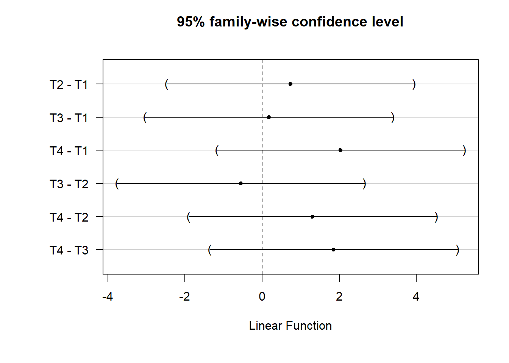
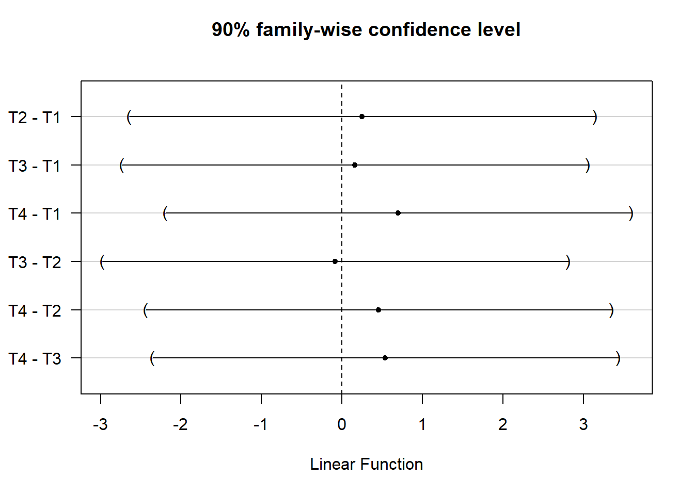

Chapter 5 Analysis Choices
We’ve organized our discussion of analysis tactics in this chapter by a study’s design. After all, different study designs often require different analyses. But there are a few general tactics that we use to ensure that we can make transparent, valid, and statistically precise statements about the results of our research. We’ll start this chapter by discussing those.
First, the nature of the data that we expect to see from a given experiment informs our analysis plans. For example, we may make some choices based on the nature of the outcome — a binary outcome, a symmetrically distributed continuous outcome, and a heavily skewed continuous outcome each could each call for different analytical approaches.
Second, we tend to ask three different questions in each of our studies, and we answer them with different statistical procedures:
- Can we detect an effect in our experiment? (We use hypothesis tests to answer this question.)
- What is our best guess about the size of the effect of the experiment? (We estimate the average treatment effect of our interventions to answer this question.)
- How precise is our guess? (We report confidence intervals or standard errors to answer this question.)
Finally, in the Analysis Plans that we post online before receiving outcome data for a project, we try to anticipate many common decisions involved in data analysis — how we will treat missing data, how we will rescale, recode, and combine columns of raw data, etc. We touch on some of these topics in more detail below, and will cover others in a future chapter on Working with Data.
5.1 Completely or Urn-Draw Randomized Trials
5.1.1 Two arms
5.1.1.1 Continuous outcomes
In a completely randomized trial where outcomes take on many levels (units like times, counts of events, dollars, percentages, etc.) we generally assess the weak null hypothesis of no average effects, estimate an average treatment effect, and may also assess the sharp null hypothesis of no effect for any unit using some test statistic beside a difference-in-means.7 This last assessment allows us to check on whether our choice to focus on mean differences matters for our substantive interpretation of the results.
5.1.1.1.1 Estimating the average treatment effect and testing the weak null of no average effects
We show the kind of code we use for these purposes here. Below, Y is the outcome variable and Z is an indicator of the assignment to treatment.
## This function comes from the estimatr package
estAndSE1 <- difference_in_means(Y ~ Z,data = dat1)
print(estAndSE1)Design: Standard
Estimate Std. Error t value Pr(>|t|) CI Lower CI Upper DF
Z 4.637 1.039 4.465 8.792e-05 2.524 6.75 33.12Notice that the standard errors that we use are not the default OLS errors:
Estimate Std. Error t value Pr(>|t|)
(Intercept) 2.132 0.4465 4.775 6.283e-06
Z 4.637 0.8930 5.193 1.123e-06The standard errors we prefer reflect repeated randomization from a fixed experimental pool. This is known as the HC2 standard error. Lin (2013) and Samii and Aronow (2012) show that the standard error estimator of an unbiased average treatment effect within a “finite-sample” or design-based framework (i.e., the Neyman standard error; see Chapter 3) is equivalent to the HC2 standard error. These SEs are produced by default by the estimatr package’s function difference_in_means() and the lmtest package’s functions coeftest() and coefci(). They can also be produced using the vcovHC() function from the sandwich package.
Our preference for HC2 errors follows from their design-based justification, but many researchers encounter them as one of several methods of correcting OLS standard errors for heteroscedasticity. Essentially, this means that the variance of the regression model’s error term is not constant across observations.8 When using OLS to analyze data from a two-arm randomized trial, heteroscedasticity might appear because the variance of the outcome is different in the treatment and control groups. This is common in practice.
5.1.1.1.2 Testing the sharp null of no effects
We may assess the sharp null of no effects via direct permutation as a check on the assumptions underlying the calculations and statistical inferences above. We tend to use a -statistic as our test statistic here to parallel the above tests. But we could use a rank-based test statistic instead if we were concerned about long-tails (i.e., skew) reducing statistical power.
Below, we show how to perform these tests using two different R packages: coin, and ri2. First the coin package (Hothorn et al. 2021):
## The coin package
test1coinT <- oneway_test(Y~factor(Z),data=dat1,distribution=approximate(nresample=1000))
test1coinT
Approximative Two-Sample Fisher-Pitman Permutation Test
data: Y by factor(Z) (0, 1)
Z = -4.6, p-value <0.001
alternative hypothesis: true mu is not equal to 0test1coinR<- oneway_test(rankY~factor(Z),data=dat1,distribution=approximate(nresample=1000))
test1coinR
Approximative Two-Sample Fisher-Pitman Permutation Test
data: rankY by factor(Z) (0, 1)
Z = -4.9, p-value <0.001
alternative hypothesis: true mu is not equal to 0test1coinWR <- wilcox_test(Y~factor(Z),data=dat1,distribution=approximate(nresample=1000))
test1coinWR
Approximative Wilcoxon-Mann-Whitney Test
data: Y by factor(Z) (0, 1)
Z = -4.9, p-value <0.001
alternative hypothesis: true mu is not equal to 0Next, the ri2 package (Coppock 2022b):
Random assignment procedure: Complete random assignment
Number of units: 100
Number of treatment arms: 2
The possible treatment categories are 0 and 1.
The number of possible random assignments is approximately infinite.
The probabilities of assignment are constant across units:
prob_0 prob_1
0.75 0.25 test1riT <- conduct_ri(Y ~ Z, declaration = thedesign1,
sharp_hypothesis = 0, data = dat1, sims = 1000)
tidy(test1riT) term estimate p.value
1 Z 4.637 0test1riR <- conduct_ri(rankY ~ Z, declaration = thedesign1,
sharp_hypothesis = 0, data = dat1, sims = 1000)
tidy(test1riR) term estimate p.value
1 Z 30.8 05.1.1.2 Binary outcomes
We tend to focus on differences in percentage points when we are working with binary outcomes, usually estimated via OLS linear regression. A statement like “the effect was a 5 percentage point increase” has made communication with partners easier than a discussion in terms of log odds or odds ratios. In addition to difficulties in interpretation and communication, we also avoid logistic regression coefficients because of the bias problem noticed by Freedman (2008b) in the case of covariance adjustment or more complicated research designs.
5.1.1.2.1 Estimating the average treatment effect and testing the weak null of no average effects
We can estimate effects (and produce standard errors) for differences of proportions using the same process as above. The average treatment effect estimate here represents the difference in the proportions of positive responses (i.e., ) between treatment conditions. The standard error is still valid because it is based on the design of the study and not the distribution of the outcomes.
## Make some binary outcomes
dat1$u <- runif(ndat1)
dat1$v <- runif(ndat1)
dat1$y0bin <- ifelse(dat1$u>.5, 1, 0) # control potential outcome
dat1$y1bin <- ifelse((dat1$u+dat1$v) >.75, 1, 0) # treated potential outcomes
dat1$Ybin <- with(dat1, Z*y1bin + (1-Z)*y0bin)
truePropDiff <- mean(dat1$y1bin) - mean(dat1$y0bin)Design: Standard
Estimate Std. Error t value Pr(>|t|) CI Lower CI Upper DF
Z 0.04 0.1168 0.3425 0.7337 -0.1959 0.2759 40.93When we have an experiment that includes a treatment and control group with binary outcomes, and when we are estimating the ATE, the standard error from a difference in proportions test is the same as the Neyman standard error (and therefore the HC2 error). In contrast, the standard error from a regular OLS regression with a binary outcome — sometimes called a linear probability model — will be at least slightly incorrect due to inherent heteroscecdasticity (Angrist and Pischke 2009).
To see some logic for this, first consider that difference-in-proportion standard errors are estimated with the following equation:
is the size of the group assigned treatment, is the size of the group assigned control, is the proportion of “successes” in the group assigned treatment, and iss the proportion of “successes” in the group assigned control. Notice that the numerator in the fractions above represents the variance of the proportion in each treatment group.
Compare this with the Neyman standard error equation (Lin 2013):9
is the vector of observed outcomes under control, and is the vector of observed outcomes under treatment. This equation indicates that we use the observed variances in each treatment group to estimate the Neyman standard error for a difference in means.
The code below compares the various standard error estimators discussed here.
nt <- sum(dat1$Z)
nc <- sum(1-dat1$Z)
## 2. Find SE for difference of proportions.
p1 <- mean(dat1$Ybin[dat1$Z==1])
p0 <- mean(dat1$Ybin[dat1$Z==0])
se1 <- (p1*(1-p1))/nt
se0 <- (p0*(1-p0))/nc
se_prop <- round(sqrt(se1 + se0), 4)
## 3. Find Neyman SE
varc_s <- var(dat1$Ybin[dat1$Z == 0])
vart_s <- var(dat1$Ybin[dat1$Z == 1])
se_neyman <- round(sqrt((vart_s/nt) + (varc_s/nc)), 4)
## 4. Find OLS SE
simpOLS <- lm(Ybin~Z,dat1)
se_ols <- round(coef(summary(simpOLS))["Z", "Std. Error"], 2)
## 5. Find Neyman SE (which are the HC2 SEs)
se_neyman2 <- coeftest(simpOLS,vcov = vcovHC(simpOLS,type="HC2"))[2,2]
se_neyman3 <- estAndSE2$std.error
## 6. Show SEs
se_compare <- as.data.frame(cbind(se_prop, se_neyman, se_neyman2, se_neyman3, se_ols))
rownames(se_compare) <- "SE(ATE)"
colnames(se_compare) <- c("diff in prop", "neyman1","neyman2","neyman3", "ols")
print(se_compare) diff in prop neyman1 neyman2 neyman3 ols
SE(ATE) 0.1148 0.1168 0.1168 0.1168 0.125.1.1.2.2 Testing the sharp null of no effects
With a binary treatment and a binary outcome, we could test hypothesis that outcomes are totally independent of treatment assignment using what is called Fisher’s exact test. We can also use the permutation-based approaches above to produce results that do not rely on asymptotic assumptions. Below we show how Fisher’s exact test, the Exact Cochran-Mantel-Haenszel test, and the Exact -squared test produce the same answers.
Fisher's Exact Test for Count Data
data: dat1$Z and dat1$Ybin
p-value = 0.8
alternative hypothesis: true odds ratio is not equal to 1
95 percent confidence interval:
0.4304 3.2617
sample estimates:
odds ratio
1.173
Exact Pearson Chi-Squared Test
data: factor(Ybin) by factor(Z) (0, 1)
chi-squared = 0.12, p-value = 0.8
Exact Generalized Cochran-Mantel-Haenszel Test
data: factor(Ybin) by factor(Z) (0, 1)
chi-squared = 0.12, p-value = 0.8A difference-in-proportions test can also be performed directly (rather than relying on OLS to approximate this). In that case, the null hypothesis is tested while using a binomial distribution (rather than a Normal distribution) to approximate the underlying randomization distribution. In reasonably-sized samples, both approximations perform well.
2-sample test for equality of proportions with continuity correction
data: mat[, 2:1]
X-squared = 0.013, df = 1, p-value = 0.9
alternative hypothesis: two.sided
95 percent confidence interval:
-0.2917 0.2117
sample estimates:
prop 1 prop 2
0.52 0.56 5.1.2 Multiple arms
Multiple treatment arms can be analyzed as above, except that we now have
more than one comparison between a treated group and a control group. Such studies raise both substantive and statistical questions about multiple
testing (or “multiple comparisons”). For example, the difference_in_means
function asks which average treatment effect it should estimate, and it
only presents one comparison at a time. We could compare the treatment T2
with the baseline outcome of T1. But we could also compare both of T2 and T3 with T1 at the same time, as in the second set of results (lm_robust implements the same standard errors as difference_in_means, but allows for more flexible model specification).
estAndSE3 <- difference_in_means(Y~Z4arms,data=dat1,condition1="T1",condition2="T2")
print(estAndSE3)Design: Standard
Estimate Std. Error t value Pr(>|t|) CI Lower CI Upper DF
Z4armsT2 0.7329 1.298 0.5647 0.5749 -1.877 3.343 47.67 Estimate Std. Error t value Pr(>|t|) CI Lower CI Upper DF
(Intercept) 2.5541 0.8786 2.9070 0.004532 0.8101 4.298 96
Z4armsT2 0.7329 1.2979 0.5647 0.573593 -1.8433 3.309 96
Z4armsT3 0.1798 1.1582 0.1552 0.876956 -2.1192 2.479 96
Z4armsT4 2.0372 1.2353 1.6491 0.102393 -0.4149 4.489 96In this case, we could make different possible comparisons between pairs of treatment groups. Consider that if there were really no effects of any treatment, and if we chose to reject the null at the standard significance threshold of , we would actually claim that there was at least one effect more than 5% of the time. , or 27% of the time, we would make a false positive error, claiming an effect existed when it did not.
In general, our analyses of studies with multiple arms should reflect the fact that we are making multiple comparisons. Two points are worth emphasizing here. First, the family-wise error rate (FWER) of these tests will differ from the individual error rate of single test. In short, testing more than one hypothesis increases the chance of making at least one Type I error (i.e., incorrectly rejecting a true null hypothesis). Suppose instead of testing a single hypothesis at a conventional significance level of we tested two hypothesis at . The probability of retaining both hypotheses is and the probability of rejecting at least one of these hypotheses is — almost double our stated significance threshold of .
Second, multiple tests will often be correlated, and corrections for multiple testing should recognize these relationships — importantly, accounting for this correlation will penalize multiple testing less! When we say that tests are “correlated,” we mean that there is some relationship between the test statistics (e.g., a student’s t-statistic, or a statistic) used to perform statistical inference in each case. In other words, it means that the test statistics are jointly distributed — when one test statistic is higher, the other will tend to be higher as well.10
That issue in mind, our default recommendations for multi-arm trials are as follows:
First, decide on a focal, confirmatory comparison for the entire evaluation: say, control/status quo versus receiving any version of the treatment. Such a test would likely have more statistical power that a test that evaluates each arm separately, and would also have a correctly controlled false positive rate. This would then serve as the primary confirmatory finding we report.
Next, we perform the rest of the comparisons as exploratory analyses without multiple testing adjustment — i.e., as analyses that may inform future projects and give hints about where we might be seeing more or less of an effect, but which cannot serve as a foundation for overall conclusions on their own. Or, perform a series of additional confirmatory comparisons that adjusts for the collective false positive rate.11 Other options to consider are using the Tukey HSD procedure for pairwise comparisons, or testing the hypotheses in a particular order to preserve statistical power (Rosenbaum 2008).
5.1.2.1 Adjusting p-values and confidence intervals for multiple comparisons
Here is an illustration of different methods of adjusting for multiple comparisons in R.
To reflect that fact that we are making multiple comparisons, we could adjust -values from (uncorrelated) tests to control the familywise error rate at through either a single step procedure (e.g. Bonferroni correction) or a stepwise stepwise procedure (such as the Holm correction). We might also control the false discovery rate (e.g., using the Benjamini-Hochberg correction).
Our standard practice is to adjust the FWER for uncorrelated tests using Holm adjustment. For more on such adjustments and multiple comparisons see EGAP’s 10 Things you need to know about multiple comparisons.
## Get p-values but exclude intercept
pvals <- summary(estAndSE3multarms)$coef[2:4,4]
## Illustrate different corrections (or lack thereof)
round(p.adjust(pvals, "none"), 3)Z4armsT2 Z4armsT3 Z4armsT4
0.574 0.877 0.102 Z4armsT2 Z4armsT3 Z4armsT4
1.000 1.000 0.307 Z4armsT2 Z4armsT3 Z4armsT4
1.000 1.000 0.307 Z4armsT2 Z4armsT3 Z4armsT4
0.877 0.877 0.307 Simply adjusting -values from this linear model, however, ignores the fact that we may be interested in other pairwise comparisons, such as the difference in effects between receiving T3 vs T4. It also ignores potential correlations in the distribution of test statistics (i.e., we are leaving statistical power “on the table”).
Instead of the above, and instead of employing simulation to control the FWER (step 7 on this page), we can also implement a Tukey Honestly Signficant Differences (HSD) test. The Tukey HSD test (sometimes called a Tukey range test or just a Tukey test) calculates multiple-comparison-adjusted -values and simultaneous confidence intervals for all pairwise comparisons in a model, while taking into account possible correlations between test statistics. It is similar to a two-sample t-test, but with built in adjustment for multiple comparisons. The test statistic for any comparison between two equally-sized groups and is:
and are the means in groups and , respectively. is the pooled standard deviation of the outcome, and is the common sample size. A critical value is then chosen for given the desired significance level, , the number of groups being compared, , and the degrees of freedom, . We’ll represent this critical value with .
The confidence interval for any difference between equally-sized groups is then:12
We present an implementation of the Tukey HSD test using the glht() function from the multcomp package, which offers more flexiblity than the
TukeyHSD in the base stats package (at the price of a slightly more complicated syntax).
Using the glht() function’s linfcnt argument, we tell the function to
conduct a Tukey test of all pairwise comparisons for our treatment indicator, .
Simultaneous Tests for General Linear Hypotheses
Multiple Comparisons of Means: Tukey Contrasts
Fit: lm(formula = Y ~ Z4arms, data = dat1)
Linear Hypotheses:
Estimate Std. Error t value Pr(>|t|)
T2 - T1 == 0 0.733 1.226 0.60 0.93
T3 - T1 == 0 0.180 1.226 0.15 1.00
T4 - T1 == 0 2.037 1.226 1.66 0.35
T3 - T2 == 0 -0.553 1.226 -0.45 0.97
T4 - T2 == 0 1.304 1.226 1.06 0.71
T4 - T3 == 0 1.857 1.226 1.51 0.43
(Adjusted p values reported -- single-step method)We can then plot the 95% family wise confidence intervals for these comparisons.
## Save dfault ploting parameters
op <- par()
## Add space to left-hand outer margin
par(oma = c(1, 3, 0, 0))
plot(tukey_mc)
We can also obtain simultaneous confidence intervals at other levels of statistical significance using the confint() function.
## Generate and plot 90% confidence intervals
tukey_mc_90ci <- confint(tukey_mc, level = .90)
plot(tukey_mc_90ci)
See also: pairwise.prop.test for binary outcomes.
5.1.3 Multiple Outcomes
Our studies often involve more than one outcome measure. Assessing the effect of even a simple two-arm treatment on 10 different outcomes raises the same kinds of questions that come up in the context of multi-arm trials, generally requiring applications of the methods discussed above.
5.2 Covariance adjustment (the use of background information to increase precision)
When we have background or baseline information about experimental units, we can use this to increase the precision with which we estimate our treatment effects (i.e., increase the statistical power of our tests). We prefer to use this information during the design phase to create block randomized designs. But we may only have access to such background information after the study has been fielded, and so we will pre-specify use of this information to increase our statistical power.
We sometimes avoid the practice of adjusting for covariates (or fixed effect dummies) in a linear and additive fashion. This estimator of the average treatment effect can be subject to small-sample bias and may be — counterintuitively — less efficient (Freedman 2008a).13 In contrast, an approach to covariate adjustment that we call the “Lin estimator” performs better (Lin 2013). To be clear, the bias/precision-loss attributable to linear covariance adjustment estimator often tends to be quite small, especially when sample sizes are large (Lin 2013). Yet, because it is frequently costless to use the Lin estimator in sufficiently large samples, this is our default recommendation (see this page as well). That said, a number of our projects encounter situations where linear, additive covariate adjustment is preferred.14
5.2.1 Intuition about bias in the least squares estimator of the ATE with covariates
When we estimate the average treatment effect using least squares we tend to say that we “regress” some outcome for each unit , , on (often binary) treatment assignment, , where if a unit is assigned to treatment and 0 if assigned to control. And we write a linear model relating and as below, where represents the difference in means of between units with and :
This is a common practice because we know that the formula to estimate in Equation (1) is the same as the difference-in-means when comparing across the treatment and control groups:
This last term, expressed with covariances and variances, is the expression for the slope coefficient in a bivariate OLS regression model. This estimator of the average treatment effect has no systematic error (i.e., it is unbiased), so we can write , where refers to the expectation of across randomizations consistent with the experimental design.
Sometimes we have an additional (pre-treatment) covariate, , commonly included in the analysis as follows:
What is in this case? The matrix representation here is: . But it will be more useful to examine the scalar formula:
In very large experiments because is randomly assigned and is thus independent of background variables like . However in any given finite sized experiment , so this does not reduce to an unbiased estimator as it does in the bivariate case. Thus, Freedman (2008a) showed that there is a small amount of bias in using the equation above to estimate the average treatment effect.
To engage with this problem, and an asymptotic inefficiency issue associated with linear covariance adjustment, Lin (2013) suggested using the following least squares approach — regressing the outcome on binary treatment assignment and its interaction with mean-centered covariates:
When implementing this covariance adjustment strategy, remember that every covariate, including binary indicators used to estimate fixed effects or to control for categorical covariates, should be mean-centered and interacted with treatment. For instance, imagine a design with two treatment arms (treatment vs control) and three covariates. Linear adjustment for these covariates would involve fitting an OLS regression with four slope coefficients (one for the treatment group, and one for each covariate). Lin (2013) adjustment for these covariates would instead involve fitting a regression with seven slope coefficients (one for the treatment group, one for each mean-centered covariate, and one for each interaction of treatment with a mean-centered covariate).15
See the Green-Lin-Coppock SOP for more examples of this approach to covariance adjustment.
5.2.2 Illustrating the Lin Approach to Covariance Adjustment
Here, we show how covariance adjustment can create bias in estimation of the average treatment effect — and how to reduce this bias while using the Lin procedure as well as by increasing the size of the experiment. In this case, we compare an experiment with 20 units to an experiement with 100 units, in each case with half of the units assigned to treatment by complete random assignment.
We use the DeclareDesign R package to make
this process of assessing bias easier. Much of the code that follows
is providing instructions to the diagnose_design command, which repeats the design of the experiment many times, each time estimating an average treatment effect, and comparing the mean of those estimate to the truth (labeled “Mean Estimand” below).
The true potential outcomes (y1 and y0) are generated using one covariate, called cov2, with no true treatment effect. In what follows, we compare the performance of (1) the simple estimator using OLS to (2) estimators that use Lin’s procedure involving just the correct covariate, and also to (3) estimators that use incorrect covariates (since we rarely know exactly the covariates that help generate any given behavioral outcome).
We’ll break this code up into sections to help with legibility. First, let’s prepare design objects (a class used by DeclareDesign) for the and designs.
## Keep a dataframe of select variables
wrkdat1 <- dat1 %>% dplyr::select(id,y1,y0,contains("cov"))
## Declare this as our larger population
## (an experimental sample of 100 units)
popbigdat1 <- declare_population(wrkdat1)
## A dataset to represent a smaller experiment,
## or a cluster randomized experiment with few clusters
## (an experimental sample of 20 units)
set.seed(12345)
smalldat1 <- dat1 %>% dplyr::select(id,y1,y0,contains("cov")) %>% sample_n(20)
## The relevant covariate is a reasonably strong predictor of the outcome
summary(lm(y0~cov2,data=smalldat1))$r.squared
## Now declare the differeent inputs for DeclareDesign
## (declare the smaller population, and assign treatment in each)
popsmalldat1 <- declare_population(smalldat1)
assignsmalldat1 <- declare_assignment(Znew=complete_ra(N,m=10))
assignbigdat1 <- declare_assignment(Znew=complete_ra(N,m=50))
## No additional treatment effects
## (potential outcomes)
po_functionNull <- function(data){
data$Y_Znew_0 <- data$y0
data$Y_Znew_1 <- data$y1
data
}
## A few additional declare design settings
ysdat1 <- declare_potential_outcomes(handler = po_functionNull)
theestimanddat1 <- declare_inquiry(ATE = mean(Y_Znew_1 - Y_Znew_0))
theobsidentdat1 <- declare_reveal(Y, Znew)
## The smaller sample design
thedesignsmalldat1 <- popsmalldat1 + assignsmalldat1 + ysdat1 + theestimanddat1 + theobsidentdat1
## The larger sample design
thedesignbigdat1 <- popbigdat1 + assignbigdat1 + ysdat1 + theestimanddat1 + theobsidentdat1Next, we’ll prepare a list of estimators (i.e., models) we want to compare. These include different numbers of covariates, with and without Lin (2013) adjustment.
## Declare a selection of different estimation strategies
estCov0 <- declare_estimator(Y~Znew, inquiry=theestimanddat1, .method=lm_robust, label="CovAdj0: Lm, No Covariates")
estCov1 <- declare_estimator(Y~Znew+cov2, inquiry=theestimanddat1, .method=lm_robust, label="CovAdj1: Lm, Correct Covariate")
estCov2 <- declare_estimator(Y~Znew+cov1+cov2+cov3+cov4+cov5+cov6+cov7+cov8, inquiry=theestimanddat1, .method=lm_robust, label="CovAdj2: Lm, Mixed Covariates")
estCov3 <- declare_estimator(Y~Znew+cov1+cov3+cov4+cov5+cov6, inquiry=theestimanddat1, .method=lm_robust, label="CovAdj3: Lm, Wrong Covariates")
estCov4 <- declare_estimator(Y~Znew,covariates=~cov1+cov2+cov3+cov4+cov5+cov6+cov7+cov8, inquiry=theestimanddat1, .method=lm_lin, label="CovAdj4: Lin, Mixed Covariates")
estCov5 <- declare_estimator(Y~Znew,covariates=~cov2, inquiry=theestimanddat1, .method=lm_lin, label="CovAdj5: Lin, Correct Covariate")
## List them all together
all_estimators <- estCov0 + estCov1 + estCov2 + estCov3 + estCov4 + estCov5After this, we’ll add those estimators to our design class objects.
## Smaller sample
thedesignsmalldat1PlusEstimators <- thedesignsmalldat1 + all_estimators
## Larger sample
thedesignbigdat1PlusEstimators <- thedesignbigdat1 + all_estimatorsNow, let’s simulate each design 200 times and evaluate their performance. First, the smaller sample:
## Summarize characteristics of the smaller-sample designs
sims <- 200
set.seed(12345)
thediagnosisCovAdj1 <- diagnose_design(
thedesignsmalldat1PlusEstimators,
sims = sims,
bootstrap_sims = 0
)Second, the larger sample:
## Summarize characteristics of the larger-sample designs
set.seed(12345)
thediagnosisCovAdj2 <- diagnose_design(
thedesignbigdat1PlusEstimators,
sims = sims,
bootstrap_sims = 0
)From the small sample simulation (N=20), we can see that “CovAdj1: Lm, Correct Covariate” shows fairly large bias compared to the estimator using no covariates at all. The Lin approach using only the correct covariate reduces the bias, but does not erase it. However, the unadjusted estimator has fairly low power where as the Lin approach with the correct covariate “CovAdj5: Lin, Correct Covariate” has excellent power to detect the 1 SD effect built into this experiment. One interesting result here is that the Lin approach is worst (in terms of power) when a mixture of correct and incorrect covariates are added to the linear model following the interaction-and-centering based approach.
| Estimator | Term | Mean Estimand | Mean Estimate | Bias | SD Estimate | RMSE | Power |
|---|---|---|---|---|---|---|---|
| CovAdj0: Lm, No Covariates | Znew | 5.03 | 5.08 | 0.05 | 1.78 | 1.78 | 0.65 |
| CovAdj1: Lm, Correct Covariate | Znew | 5.03 | 5.32 | 0.29 | 1.08 | 1.11 | 0.98 |
| CovAdj2: Lm, Mixed Covariates | Znew | 5.03 | 5.12 | 0.09 | 1.39 | 1.39 | 0.89 |
| CovAdj3: Lm, Wrong Covariates | Znew | 5.03 | 5.21 | 0.18 | 1.64 | 1.65 | 0.78 |
| CovAdj4: Lin, Mixed Covariates | Znew | 5.03 | 4.58 | -0.45 | 8.07 | 8.06 | 0.35 |
| CovAdj5: Lin, Correct Covariate | Znew | 5.03 | 5.13 | 0.10 | 1.05 | 1.05 | 1.00 |
The experiment with shows much smaller bias than the small experiment above. Since all estimators allow us to detect the 1 SD effect (Power=1), we can look to the RMSE (Root Mean Squared Error) column to learn about the precision of these estimators. Again, the unadjusted approach has low bias, but it now has the largest standard error. While the Lin approach with a mixture of correct and incorrect covariates has low bias, it shows slightly worse precision than one that gets the choice of covariates correct.
| Estimator | Term | Mean Estimand | Mean Estimate | Bias | SD Estimate | RMSE | Power |
|---|---|---|---|---|---|---|---|
| CovAdj0: Lm, No Covariates | Znew | 5.45 | 5.45 | -0.01 | 0.76 | 0.76 | 1.00 |
| CovAdj1: Lm, Correct Covariate | Znew | 5.45 | 5.47 | 0.02 | 0.50 | 0.50 | 1.00 |
| CovAdj2: Lm, Mixed Covariates | Znew | 5.45 | 5.48 | 0.03 | 0.53 | 0.53 | 1.00 |
| CovAdj3: Lm, Wrong Covariates | Znew | 5.45 | 5.44 | -0.01 | 0.63 | 0.63 | 1.00 |
| CovAdj4: Lin, Mixed Covariates | Znew | 5.45 | 5.47 | 0.02 | 0.53 | 0.53 | 1.00 |
| CovAdj5: Lin, Correct Covariate | Znew | 5.45 | 5.47 | 0.01 | 0.50 | 0.50 | 1.00 |
The Lin approach works well when covariates are few and sample sizes are large, but these simulations show where the approach is weaker: when there are many covariates (relative to the number of observations), some of which may not actually be correlated with the outcome. In this case, the estimator involving both correct and irrelevant covariates included 18 terms. Fitting a model with 18 terms using a small sample, e.g. , allows nearly any observation to exert undue influence, increases the risk of serious multicollinearity, and leads to overfitting problems in general.
Our team does not often run into such an extreme version of this problem because our studies have tended to involve many thousands of units and relatively few covariates. However, when we do encounter situations where the number of covariates (or fixed effects) we’d like to account for is large, we consider a few alternative approaches: (1) standard linear covariate adjustment; (2) collapsing the covariates into fewer dimensions (e.g., using principal component analysis); or (3) working with a residualized version of the outcome, as described below.
5.2.3 The Rosenbaum Approach to Covariance Adjustment
When we have many covariates, sometimes Lin adjustment prevents us from calculating appropriate standard errors and/or can lead to overfitting. Rosenbaum (2002) showed an approach in which the outcomes are regressed on covariates, ignoring treatment assignment, and then the residuals from that first regression are used as the outcome in a second regression to estimate an average treatment effect. Again, we evaluate this approach through simulation.
First, code we use to generate Rosenbaum (2002) estimators:
## The argument covs is a character vector of names of covariates.
## The function below generates a separate estimation command
## that performs Rosenbaum (2002) adjustment for the specified
## covariates, given a sample of data. This new function can
## then by used as an estimator in simulations below. This code
## takes advantage of the concept of "function factories."
## See, e.g.: https://adv-r.hadley.nz/function-factories.html.
make_est_fun<-function(covs){
force(covs)
## Generate a formula from the character vector of covariates
covfmla <- reformulate(covs,response="Y")
## What the new function to-be-generated will do,
## given the model generated above:
function(data){
data$e_y <- residuals(lm(covfmla,data=data))
obj <- lm_robust(e_y~Znew,data=data)
res <- tidy(obj) %>% filter(term=="Znew")
return(res)
}
}
## Make Rosenbaum (2002) estimators for different groups of covariates
est_fun_correct <- make_est_fun("cov2")
est_fun_mixed<- make_est_fun(c("cov1","cov2","cov3","cov4","cov5","cov6","cov7","cov8"))
est_fun_incorrect <- make_est_fun(c("cov1","cov2","cov3","cov4","cov5","cov6"))
## Declare additional estimators, to add to the designs above
estCov6 <- declare_estimator(handler = label_estimator(est_fun_correct), inquiry=theestimanddat1, label="CovAdj6: Resid, Correct")
estCov7 <- declare_estimator(handler = label_estimator(est_fun_mixed), inquiry=theestimanddat1, label="CovAdj7: Resid, Mixed")
estCov8 <- declare_estimator(handler = label_estimator(est_fun_incorrect), inquiry=theestimanddat1, label="CovAdj8: Resid, InCorrect")
## Add the additional estimators
thedesignsmalldat1PlusRoseEstimators <- thedesignsmalldat1 + all_estimators + estCov6 + estCov7 + estCov8
thedesignbigdat1PlusRoseEstimators <- thedesignbigdat1 + all_estimators + estCov6 + estCov7 + estCov8Second, we evaluate a design that applies those estimators (alongside the others) to our smaller sample:
set.seed(12345)
thediagnosisCovAdj3 <- diagnose_design(
thedesignsmalldat1PlusRoseEstimators,
sims = sims,
bootstrap_sims = 0
)Finally, we evaluate a design that applies those estimators (alongside the others above) to our larger sample:
set.seed(12345)
thediagnosisCovAdj4 <- diagnose_design(
thedesignbigdat1PlusRoseEstimators,
sims = sims,
bootstrap_sims = 0
)With a small sample (N=20), the Rosenbaum-style approach yields very little bias and quite high power using the correct covariate (“CovAdj6: Resid, Correct”), but performs poorly in terms of bias and precision with incorrect covariates.
| Estimator | Term | Mean Estimand | Mean Estimate | Bias | SD Estimate | RMSE | Power | |
|---|---|---|---|---|---|---|---|---|
| 7 | CovAdj6: Resid, Correct | Znew | 5.03 | 5.00 | -0.03 | 1.02 | 1.02 | 1.00 |
| 8 | CovAdj7: Resid, Mixed | Znew | 5.03 | 2.95 | -2.08 | 1.11 | 2.35 | 0.80 |
| 9 | CovAdj8: Resid, InCorrect | Znew | 5.03 | 3.53 | -1.50 | 1.20 | 1.92 | 0.85 |
With a larger experiment, the bias goes down, but coverage is still relatively worse when incorrect covariates are included. We speculate that performance might improve if we fit covariance adjustment models that produce residuals separately for the treated and control groups.
| Estimator | Term | Mean Estimand | Mean Estimate | Bias | SD Estimate | RMSE | Power | |
|---|---|---|---|---|---|---|---|---|
| 7 | CovAdj6: Resid, Correct | Znew | 5.45 | 5.42 | -0.03 | 0.49 | 0.49 | 1.00 |
| 8 | CovAdj7: Resid, Mixed | Znew | 5.45 | 5.05 | -0.40 | 0.53 | 0.67 | 1.00 |
| 9 | CovAdj8: Resid, InCorrect | Znew | 5.45 | 5.14 | -0.31 | 0.52 | 0.61 | 1.00 |
5.3 How to choose covariates for covariance adjustment?
Our analysis plans commonly specify a few covariates based on what we know about the mechanisms and context of the study. In general, if we have a measurement of the outcome before the treatment was assigned — the baseline outcome — we try to use it as a part of a blocking or covariance adjustment strategy.
When we have access to many covariates, we may sometimes use simple machine learning methods to select variables that strongly predict the outcome, such as a lasso model. In particular, we tend to prefer the adaptive lasso rather than a simple lasso because it has better theoretical properties (Zou 2006), but also because the adaptive lasso tends to produce sparser results — and the bias from covariance adjustment can sometimes be significance if we include too many covariates.
5.4 Block-randomized trials
We design block-randomized trials by splitting units into groups based on predefined characteristics — covariates that cannot be changed by the experimental treatment — and then randomly assigning treatment within each group. We use this procedure when we want to increase our ability to detect signal from noise. It assumes that the noise, or random variation in the outcome measure, is associated with the variables that we use to assign blocks. For example, if we imagine that patterns of energy use will tend to differ according to size of family, we may create blocks or strata of different family sizes and randomly assign an energy saving intervention separately within those blocks.
We also design block-randomized experiments when we want to assess effects within and across subgroups (for example, if we want to ensure that we have enough statistical power to detect a difference in effects between veterans and non-veterans). If we have complete random assignment, it is likely that the proportion of veterans assigned treatment will not be exactly same as the proportion of non-veterans receiving treatment. However, if we stratify or block the group on military status, and randomly assign treatment and control within each group, we can then ensure that equal proportions (or numbers) or veterans and non-veterans receive the treatment and control.
Most of the general ideas that we demonstrated in the context of completely randomized trials have direct analogues in the case of block randomized trials. The only additional question that arises with block randomized trials is about how to weight the contributions of each individual block when calculating an overall average treatment effect or testing an overall hypothesis about treatment effects. We begin with the simple case of testing the sharp null of no effects when we have a binary outcome — in the case of a Cochran-Mantel-Haenszel test the weighting of different blocks is handled automatically.
5.4.1 Testing binary outcomes under block randomization: Cochran-Mantel-Haenszel (CMH) test for K X 2 X 2 tables
For block-randomized trials with a binary outcome, we might use the CMH test to evaluate the null of no effect.16 This is one way of keeping the outcomes for each strata separate rather than pooling them together — under blocking, we are effectively repeating the same experiment separately within each stratum. The CMH test tells us if the odds ratios across strata support an association between the outcome and treatment (Cochran 1954; Mantel and Haenszel 1959).
To set up the CMH test, we need k sets of 2x2 contingency tables. Suppose the table below represents outcomes from stratum i where A, B, C, and D are counts of observations:
| Assignment | Response | No response | Total |
|---|---|---|---|
| Treatment | A | B | A+B |
| Control | C | D | C+D |
| Total | A+C | B+D | A+B+C+D = T |
The CMH test statistic takes the sum of the deviations between observed and expected outcomes within each stratum ( and , respectively), squares this sum, and compares it to the sum of the variance within each strata:
where
and
In large-enough samples, if there are no associations between treatment and outcomes across strata, we would expect to see an odds ratio equal to 1. Across randomizations of large-enough samples, this test statistic follows an asymptotic distribution with degrees of freedom = 1.
For a standard two-arm trial, the odds ratio for a given stratum would be:
Across strata, could then find an overall common odds ratio as follows:
If this common odds ratio is substantially greater than 1, then we should suspect that there is an association between the outcome and treatment across strata, and the CMH test statistic would be large. If , this would instead support the null hypothesis that there is no association between treatment and the outcome, and the CMH test statistic would be small.
We could also use the CMH test to compare odds ratios between experiments, rather than comparing against the null that the common odds ratio = 1.
5.4.2 Estimating an overall Average Treatment Effect
Whether or not we randomly assign a policy intervention within blocks or strata, our team nearly always reports a single estimate of the average treatment effect. To review, we define the overall ATE (the theoretical estimand) as a simple average of the individual additive treatment effects. For two treatments, we might write this unobserved causal effect as . We’d therefore express the overall (true) ATE across our sample as as . Unfortunately, this quantity is unobservable.
In blocked designs, we have randomly assigned the intervention within each block independently. As we note above, this (1) increases precision and (2) supports more credible subgroup analysis. How might we “analyze as we have randomized” to learn about using observable data? Our approach is to build up from the block-level (see Gerber and Green (2012) for more on this approach).
Say, for example, that the unobserved ATE within a given block, , was . Here, we are averaging the individual level treatment effects () across all people in block . Now, imagine that we had an experiment with blocks of different sizes (and perhaps with different proportions of units assigned to treatment within block — perhaps certain blocks are more expensive places in which to run an experiment). We can imagine learning about through a different estimand, the block-size weighted average of the true within-block treatment effects:
We can estimate based on its the observed analogue just as we have with a completely randomized experiment. Each block is essentially a smaller completely randomized experiment, so we can estimate using the following unbiased estimator, where means “for in the treatment group” and where is the number of units assigned to treatment in block :
We would then plug estimates of into the expression for above. Note that many people do not use this unbiased estimator because the precision of tests based on this estimator are worse that those of another estimator that is slightly biased. We will demonstrate both methods here — the block-size weighted estimator and what we call the precision-weighted estimator — and offer some reflections on when a biased estimator that tends to produce answers closer to the truth might be preferred over an unbiased estimator where any given estimate may be farther from the truth.
The precision-weighted estimator uses harmonic-weights. We have tended to call it a “precision-weighted average.” The weights combine both the block size and the proportion of the block assigned to treatment for a binary treatment, so that the weight is and the estimator is: .
Notice that, by weighting blocks proportionally to their contributions to overall sample size, effectively treats all units equally in terms of their contributions to the ATE estimate. In contrast, weights blocks (and therefore the individuals within them) relatively more if they have a treatment probability closer to 0.5.17 In effect, the precision benefits here come from giving slightly more explanatory power to units in blocks where treatment assignment is relatively more balanced.
Next, we will show multiple approaches to applying these estimators. We will then demonstrate (1) how ignoring the blocks when estimating treatment effects can produce problems in both estimation and testing, and (2) that the block-size weighted approaches are unbiased but possibly less precise than the precision weighted approaches.
## Create block sizes and create block weights
B <- 10 # Number of blocks
dat <- data.frame(b=rep(1:B,c(8,20,30,40,50,60,70,80,100,800)))
dat$bF <- factor(dat$b)
## x1 is a covariate that strongly predicts the outcome without treatment\
set.seed(2201)
dat <- group_by(dat,b) %>%
mutate(
nb=n(),
x1=rpois(n = nb,lambda=runif(1,min=1,max=2000))
)
## The treatment effect varies by size of block (using sqrt(nb) because nb has such a large range.)
dat <- group_by(dat,b) %>%
mutate(
y0=sd(x1)*x1+rchisq(n=nb,df=1),
y0=y0*(y0>quantile(y0,.05)),
tauib = -(sd(y0))*sqrt(nb) + rnorm(n(),mean=0,sd=sd(y0)),
y1=y0+tauib,
y1=y1*(y1>0)
)
blockpredpower <- summary(lm(y0~bF,data=dat))$r.squaredTo make the differences between these estimation approaches more vivid, we’ve create a dataset with blocks of widely varying sizes, half of the blocks have half of the units assigned to treatment and the other half 10% of the units assigned to treatment. The baseline outcomes are strongly predicted by the blocks ( around ).
We will use DeclareDesign to assess bias, coverage and power (or precision) of the different estimators here. The next code block sets up the simulation and also demonstrates different approaches to estimating an ATE (as usual, we can only do this because we are using simulation here to compare these different statistical techniques).
## Using the Declare Design Machinery to ensure that
## the data here and the simulations below match
## Declare the population
thepop <- declare_population(dat)
## Represent the potential outcomes with a function
po_function <- function(data){
data$Y_Z_0 <- data$y0
data$Y_Z_1 <- data$y1
data
}
## Use this function to declare the potential outcomes
theys <- declare_potential_outcomes(handler = po_function)
## Declare the desired inquiry
theestimand <- declare_inquiry(ATE = mean(Y_Z_1 - Y_Z_0))
## Declare treatment assignment
numtreated <- sort(unique(dat$nb))/rep(c(2,10),B/2)
theassign <- declare_assignment(Z=block_ra(blocks = bF, block_m=numtreated))
## Declare revealed data (potential outcomes aren't observed)
theobsident <- declare_reveal(Y, Z)
## Combine these design elements together
thedesign <- thepop + theys + theestimand + theassign + theobsident
# Draw data matching this design
set.seed(2201)
dat2 <- draw_data(thedesign)
## Adding rank transformed outcomes for use later
dat2 <- dat2 %>%
group_by(b) %>%
mutate(
y0md = y0 - mean(y0),
y1md = y1 - mean(y1),
alignedY = Y - mean(Y),
rankalignedY = rank(alignedY)
)
## Now add individual-level weights to the data.
## Different textbooks and algebra yield different expressions.
## We show that they are all the same.
dat2 <- dat2 %>%
group_by(b) %>%
mutate(
nb = n(), # Size of block
pib=mean(Z), # prob of treatment assignment
nTb=sum(Z), # Number treated
nCb=nb - nTb, # Number control
nbwt = ( Z/pib ) + ( (1-Z)/(1-pib) ),
nbwt2 = nb/nrow(dat2),
#hbwt = 2 * (nCb * nTb ) / (nTb + nCb), # Precision weight
#hbwt2 = 2 * ( nbwt2 )*(pib*(1-pib)),
hbwt3 = nbwt * ( pib * (1 - pib) )
)
dat2$nbwt3 <- dat2$nbwt2/dat2$nb
## Declare a new population, and generate another design
thepop2 <- declare_population(dat2)
thedesign2 <- thepop2 + theys + theestimand + theassign + theobsident
## Create the block level dataset, with block level weights.
datB <- group_by(dat2,b) %>%
summarize(
taub = mean(Y[Z==1]) - mean(Y[Z==0]), # Estimated effect (variance below)
truetaub = mean(y1) - mean(y0), # True effect
nb = n(), # Number in block
nTb = sum(Z), # Number treated
nCb = nb - nTb, # Number control
estvartaub = (nb/(nb-1)) * (var(Y[Z==1])/nTb) + (var(Y[Z==0])/nCb),
pb=mean(Z), # Proportion treated
nbwt = unique(nb/nrow(dat2)), # Block-size weights
pbwt = pb * ( 1 - pb),
hbwt2 = nbwt * pbwt, # Precision weights
hbwt5 = pbwt * nb,
hbwt= (2*(nCb * nTb )/(nTb + nCb)))
datB$greenlabrule <- 20*datB$hbwt5/sum(datB$hbwt5)
## All of these expressions of the harmonic mean weight are the same
datB$hbwt01 <- datB$hbwt/sum(datB$hbwt)
datB$hbwt201 <- datB$hbwt2/sum(datB$hbwt2)
datB$hbwt501 <- datB$hbwt5/sum(datB$hbwt5)
stopifnot(all.equal(datB$hbwt01,datB$hbwt201))
stopifnot(all.equal(datB$hbwt01,datB$hbwt501))
## What is the "true" ATE?
trueATE1 <- with(dat2, mean(y1) - mean(y0))
trueATE2 <- with(datB, sum(truetaub*nbwt))
stopifnot(all.equal(trueATE1,trueATE2))
## We could define the following as an estimand, too.
## trueATE3 <- with(datB, sum(truetaub*hbwt01))
## c(trueATE1,trueATE2,trueATE3)
## We can get the same answer using R's weighted.mean command
trueATE2b <- weighted.mean(datB$truetaub,w=datB$nbwt)
stopifnot(all.equal(trueATE2b,trueATE2))We can now review the design:
blocknumber
treatment 1 2 3 4 5 6 7 8 9 10
0 4 18 15 36 25 54 35 72 50 720
1 4 2 15 4 25 6 35 8 50 80With those simulations prepared, we’ll start by illustrating multiple approaches for getting an unbiased block-size-weighted average treatment effect estimate, . Notice that we do not use linear, additive fixed effects adjustment in any of these approaches.18 Two of these approaches do include fixed effects dummies, but they are mean-centered and interacted with treatment assignment — in other words, we include the fixed effects via Lin (2013) adjustment.19
Six approaches to the block-size-weighted ATE under blocking:
simple_blockrefers to calculating mean differences within blocks and then taking the block-size weighted averagee of themdiffmeansuses thedifference_in_meansfunction from theestimatrpackage (Blair et al. 2022)lmlinuses the Lin approach to covariance adjustment via block indicators, using thelm_linfunctionlmlinbyhandverifies that function using matrix operations; see this entry from the SOP from Don Green’s lab at ColumbiainteractionBFEuses theEstimateIWEfunction from thebfepackage (Gibbons 2018)regwtsuses the basic OLS function from Rlmwith appropriate weights.
Let’s compare the estimates themselves:
### simple_block
ate_nbwt1 <- with(datB,sum(taub*nbwt))
### diffmeans
ate_nbwt2 <- difference_in_means(Y~Z,blocks = b,data=dat2)
### lmlin
ate_nbwt3 <- lm_lin(Y~Z,covariates=~bF,data=dat2)
### interactionBFE
ate_nbwt5 <- EstimateIWE(y="Y",treatment="Z",group="bF",controls=NULL,data=as.data.frame(dat2))
### regwts
ate_nbwt6 <- lm_robust(Y~Z,data=dat2,weights=nbwt)
ate_nbwt6a <- lm(Y~Z,data=dat2,weights=nbwt)
ate_nbwt6ase <- coeftest(ate_nbwt6a,vcov=vcovHC(ate_nbwt6a,type="HC2"))
### lmlinbyhand
X <- model.matrix(~bF-1,data=dat2)
barX <- colMeans(X)
Xmd <- sweep(X,2,barX)
stopifnot( all.equal( (X[,3]-mean(X[,3])), Xmd[,3] ) )
ZXmd <- sweep(Xmd,1,dat2$Z,FUN="*")
stopifnot( all.equal( dat2$Z*Xmd[,3],ZXmd[,3] ))
bigX <- cbind(Intercept=1,Z=dat2$Z,Xmd[,-1],ZXmd[,-1])
bigXdf <- data.frame(bigX,Y=dat2$Y)
ate_nbwt4 <-lm(Y~.-1,data=bigXdf)
ate_nbwt4se <- coeftest(ate_nbwt4,vcov.=vcovHC(ate_nbwt4,type="HC2"))
### List all
nbwtates<-c(
simple_block=ate_nbwt1,
diffmeans=ate_nbwt2$coefficients[["Z"]],
lmlin=ate_nbwt3$coefficients[["Z"]],
lmlinbyhand=ate_nbwt4$coefficients[["Z"]],
interactionBFE=ate_nbwt5$swe.est,
regwts=ate_nbwt6$coefficients[["Z"]]
)
nbwtates simple_block diffmeans lmlin lmlinbyhand interactionBFE regwts
-12823 -12823 -12823 -12823 -12823 -12823 Let’s also quickly review their standard errors:
### Comparing the Standard Errors
ate_nbwt1se <- sqrt(sum(datB$nbwt^2 * datB$estvartaub))
nbwtses <- c(
simple_block=ate_nbwt1se,
diffmeans=ate_nbwt2$std.error,
lmlin=ate_nbwt3$std.error[["Z"]],
lmlinbyhand=ate_nbwt4se["Z","Std. Error"],
interactionBFE=ate_nbwt5$swe.var^.5,
regwts=ate_nbwt6$std.error[["Z"]]
)
nbwtses simple_block diffmeans.Z lmlin lmlinbyhand interactionBFE regwts
182.0 181.3 181.3 181.3 172.3 441.0 As noted above, weighting by block size allows us to define the average treatment effect in a way that treats each unit equally. And we have just illustrated six different ways to estimate this effect. If we want to calculate standard errors for these estimators (e.g., to produce confidence intervals), we will, in general, be leaving statistical power on the table in exchange for an easier to interpret estimate, and an estimator that relates to its underlying target in an unbiased fashion.
Next, we show an approach to blocking adjustment that is optimal from the perspective of statistical power, precision, or narrow confidence intervals. As discussed above, we call this the “precision-weighted” average treatment effect.20 Some literatures typically use ordinal least squares regression machinery to calculate an ATE that is weighted to account for blocking — i.e., a “Least Squared Dummy Variables” (LSDV) approach to adjusting for block fixed effects. We show here that this is simply another version of the precision-weighted ATE estimator for blocked designs.
Five approaches to the precision-weighted ATE under blocking:
simple_blockcalculates a simple differences of means within blocks and then takes a weighted average of those differences, using the precision weightslm_fixed_effects1useslm_robustwith binary indicators for blockslm_fixed_effects2useslm_robustwith thefixed_effectsoption including a factor variable recording block membershipdirect_wtsuseslm_robustwithout block-indicators but with precision weightsdemeanedregresses a block-centered version of the outcome on a block-centered version of the treatment indicator.
Let’s compare the estimates themselves:
### simple_block
ate_hbwt1 <- with(datB, sum(taub*hbwt01))
### lm_fixed_effects1
ate_hbwt2 <- lm_robust(Y~Z+bF,data=dat2)
### lm_fixed_effects2
ate_hbwt3 <- lm_robust(Y~Z,fixed_effects=~bF,data=dat2)
### direct_wts
ate_hbwt4 <- lm_robust(Y~Z,data=dat2,weights=hbwt3)
### demeaned
ate_hbwt5 <- lm_robust(I(Y-ave(Y,b))~I(Z-ave(Z,b)),data=dat2)
### List all
hbwtates<-c(
simple_block=ate_hbwt1,
lm_fixed_effects1=ate_hbwt2$coefficients[["Z"]],
lm_fixed_effects2=ate_hbwt3$coefficients[["Z"]],
direct_wts=ate_hbwt4$coefficients[["Z"]],
demeaned=ate_hbwt5$coefficient[[2]]
)
hbwtates simple_block lm_fixed_effects1 lm_fixed_effects2 direct_wts demeaned
-13981 -13981 -13981 -13981 -13981 Let’s also quickly review their standard errors:
### Comparing the Standard Errors
ate_hbwt1se <- sqrt(sum(datB$hbwt01^2 * datB$estvartaub))
hbwtses <- c(
simple_block=ate_hbwt1se,
lm_fixed_effects1=ate_hbwt2$std.error[["Z"]],
lm_fixed_effects2=ate_hbwt3$std.error[["Z"]],
direct_wts=ate_hbwt4$std.error[["Z"]],
demeaned=ate_hbwt5$std.error[[2]]
)
hbwtses simple_block lm_fixed_effects1 lm_fixed_effects2 direct_wts demeaned
328.7 716.6 716.6 788.3 705.4 Now, we claimed that the block size weighted estimator is unbiased but perhaps less precise than the precision-weighted estimator. We’ll use DeclareDesign to compare the performance of these estimators. We focus here on the use of least squares to calculate the weighted averages and standard errors but, as we showed above, one could calculate the estimates easily without using least squares.
We implement those estimators as functions passed to the diagnose_design
function in the next code block.
### Define estimator functions employed in the simulation below
### Two options that don't account for blocking
estnowtHC2 <- declare_estimator(Y~Z, inquiry=theestimand, .method=lm_robust, label="E1: Ignores Blocks, Design (HC2) SE")
estnowtIID <- declare_estimator(Y~Z, inquiry=theestimand, .method=lm, label="E0: Ignores Blocks, OLS SE")
### Two options applying block-size weights
estnbwt1 <- declare_estimator(Y~Z, inquiry=theestimand, .method=difference_in_means, blocks = b, label="E2: Diff Means Block Size Weights, Design SE")
estnbwt2 <- declare_estimator(Y~Z, inquiry=theestimand, .method=lm_lin, covariates=~bF, label="E3: Treatment Interaction with Block Indicators, Design SE")
### Using the BFE package (also block-size weights)
iwe_est_fun <- function(data) {
obj <- EstimateIWE(y="Y", treatment="Z", group="bF", controls = NULL, data = data)
res <- summary.iwe(obj)["SWE",]
res$term <- "Z"
return(res)
}
estnbwt3 <- declare_estimator(handler = label_estimator(iwe_est_fun), inquiry = theestimand, label = "E4: Treatment Interaction with Block Indicators, Design SE")
### Another block-size-weighted option (via regression weights)
nbwt_est_fun <- function(data){
data$newnbwt <- with(data,( Z/pib ) + ( (1-Z)/(1-pib) ) )
obj <-lm_robust(Y~Z,data=data,weights = newnbwt)
res <- tidy(obj) %>% filter(term=="Z")
return(res)
}
estnbwt4 <- declare_estimator(handler = label_estimator(nbwt_est_fun), inquiry=theestimand, label="E5: Least Squares with Block Size Weights, Design SE")
### Two precision-weighted options
esthbwt1 <- declare_estimator(Y~Z+bF, inquiry=theestimand, .method=lm_robust,label="E6: Precision Weights via Fixed Effects, Design SE")
esthbwt2 <- declare_estimator(Y~Z, inquiry=theestimand, .method=lm_robust,fixed_effects=~bF,label="E7: Precision Weights via Demeaning, Design SE")
### Another precision-weighted option (regression weights)
hbwt_est_fun <- function(data){
data$newnbwt <- with(data,( Z/pib ) + ( (1-Z)/(1-pib) ) )
data$newhbwt <- with(data, newnbwt * ( pib * (1 - pib) ) )
obj <-lm_robust(Y~Z,data=data,weights = newhbwt)
res <- tidy(obj) %>% filter(term=="Z")
return(res)
}
esthbwt3 <- declare_estimator(handler = label_estimator(hbwt_est_fun), inquiry=theestimand, label="E8: Direct Precision Weights, Design SE")
### A final precision-weighted option (demeaning)
direct_demean_fun <- function(data){
data$Y <- with(data, Y - ave(Y,b))
data$Z <- with(data, Z - ave(Z,b))
obj <- lm_robust(Y~Z,data=data)
data.frame(term = "Z" ,
estimate = obj$coefficients[[2]],
std.error = obj$std.error[[2]],
statistic = obj$statistic[[2]],
p.value=obj$p.value[[2]],
conf.low=obj$conf.low[[2]],
conf.high=obj$conf.high[[2]],
df=obj$df[[2]],
outcome="Y")
}
esthbwt4 <- declare_estimator(handler = label_estimator(direct_demean_fun), inquiry=theestimand, label="E9: Direct Demeaning, Design SE")
### Vector of all the estimator function names just created
### (via regular expression)
theestimators <- ls(patt="^est.*?wt")
theestimators
### Get results for each estimator
### (get() calls the object from the environment with name x;
### this is then applied to the dataframe specified, and
### the estimates/SEs are kept)
checkest <- sapply(
theestimators,
function(x){
get(x)(as.data.frame(dat2))[c("estimate","std.error")]
}
)
### Combine all of these design objects
thedesignPlusEstimators <- thedesign2 +
estnowtHC2 + estnowtIID + estnbwt1 + estnbwt2 + estnbwt3 + estnbwt4 +
esthbwt1 + esthbwt2 + esthbwt3 + esthbwt4sims <- 200
set.seed(12345)
thediagnosis <- diagnose_design(thedesignPlusEstimators, sims = sims, bootstrap_sims = 0)We see in the diagnostic output below that the estimator using block-size weights (E2, E3, E4, or E5) all eliminate bias (within simulation error). The estimators ignoring blocks (E0 and E1), have bias, and in this simulation, the precision weighed estimators (E6–E9) also show high bias — with some of them also producing poor coverage or false positive rates (E7 and E9).
This output also shows us the “SD Estimate” (which is a good estimate of the standard error of the estimate) and the “Mean SE” (which is the average of the analytic estimates of the standard error). In the case of E2, E3, E4 or E5 the Mean SE is larger than the SD Estimate — this is good in that it means that our analytic standard errors will be conservative. However, we also would prefer that our analytic standard errors not be too conservative — for example, E5 looks good but the mean analytic standard error is quite high compared to E4, for example.
| Estimator | Term | Mean Estimand | Mean Estimate | Bias | SD Estimate | RMSE | Power |
|---|---|---|---|---|---|---|---|
| E0: Ignores Blocks, IID SE | Z | -12900.57 | -12355.37 | 545.20 | 106.01 | 555.36 | 1.00 |
| E1: Ignores Blocks, Design SE | Z | -12900.57 | -12355.37 | 545.20 | 106.01 | 555.36 | 1.00 |
| E2: Diff Means Block Size Weights, Design SE | Z | -12900.57 | -12900.11 | 0.46 | 115.65 | 115.36 | 1.00 |
| E3: Treatment Interaction with Block Indicators, Design SE | Z | -12900.57 | -12900.11 | 0.46 | 115.65 | 115.36 | 1.00 |
| E4: Treatment Interaction with Block Indicators, Design SE | Z | -12900.57 | -12900.11 | 0.46 | 115.65 | 115.36 | 1.00 |
| E5: Least Squares with Block Size Weights, Design SE | Z | -12900.57 | -12900.11 | 0.46 | 115.65 | 115.36 | 1.00 |
| E6: Precision Weights via Fixed Effects, Design SE | Z | -12900.57 | -14143.05 | -1242.48 | 208.64 | 1259.79 | 1.00 |
| E7: Precision Weights via Demeaning, Design SE | Z | -12900.57 | -14143.05 | -1242.48 | 208.64 | 1259.79 | 1.00 |
| E8: Direct Precision Weights, Design SE | Z | -12900.57 | -14143.05 | -1242.48 | 208.64 | 1259.79 | 1.00 |
| E9: Direct Demeaning, Design SE | Z | -12900.57 | -14143.05 | -1242.48 | 208.64 | 1259.79 | 1.00 |
## Now compare to better behaved outcomes.
###
g <- ggplot(data=simdesigns,aes(x=estimate,color=estimator)) +
geom_density() +
geom_vline(xintercept=trueATE1) +
geom_point(data=simmeans,aes(x=expest,y=rep(0,10)),shape=17,size=6) +
theme_bw() +
theme(legend.position = c(.9,.8))
print(g)The simulated outcome data is highly skewed by design. Our intention is to illustrate that the biases of precision-weighted estimates could be exacerbated by common problems in administrative data like skewed outcomes or zero-inflation (i.e., many 0s). One solution we can apply in this case is rank-transforming the outcome measure. This less skewed outcome nearly erases the bias from the block-size weighted estimators, and the precision-weighted approaches also perform well. However, ignoring the blocked design is still a problem in this example — E0 and E1 continue to show substantial bias.
### Define a function to rank-transform the potential outcomes
po_functionNorm <- function(data){
data <- data %>%
group_by(b) %>%
mutate(
Y_Z_0=rank(y0),
Y_Z_1=rank(y1)
)
return(as.data.frame(data))
}
### Redefine relevant DeclareDesign objects
theysNorm <- declare_potential_outcomes(handler = po_functionNorm)
thedesignNorm <- thepop2 + theysNorm + theestimand + theassign + theobsident
datNorm <- draw_data(thedesignNorm)
thedesignPlusEstimatorsNorm <- thedesignNorm +
estnowtHC2 + estnowtIID + estnbwt1 +
estnbwt2 + estnbwt3 + estnbwt4 +
esthbwt1 + esthbwt2 + esthbwt3 +
esthbwt4
### Perform a new simulation
sims <- 200
thediagnosisNorm <- diagnose_design(thedesignPlusEstimatorsNorm, sims = sims, bootstrap_sims = 0)| Estimator | Term | Mean Estimand | Mean Estimate | Bias | SD Estimate | RMSE | Power |
|---|---|---|---|---|---|---|---|
| E0: Ignores Blocks, OLS SE | Z | 0.00 | -127.08 | -127.08 | 1.85 | 127.10 | 1.00 |
| E1: Ignores Blocks, Design (HC2) SE | Z | 0.00 | -127.08 | -127.08 | 1.85 | 127.10 | 1.00 |
| E2: Diff Means Block Size Weights, Design SE | Z | 0.00 | 0.11 | 0.11 | 1.70 | 1.70 | 0.00 |
| E3: Treatment Interaction with Block Indicators, Design SE | Z | 0.00 | 0.11 | 0.11 | 1.70 | 1.70 | 0.00 |
| E4: Treatment Interaction with Block Indicators, Design SE | Z | 0.00 | 0.11 | 0.11 | 1.70 | 1.70 | 0.00 |
| E5: Least Squares with Block Size Weights, Design SE | Z | 0.00 | 0.11 | 0.11 | 1.70 | 1.70 | 0.00 |
| E6: Precision Weights via Fixed Effects, Design SE | Z | 0.00 | 0.11 | 0.11 | 1.36 | 1.36 | 0.00 |
| E7: Precision Weights via Demeaning, Design SE | Z | 0.00 | 0.11 | 0.11 | 1.36 | 1.36 | 0.00 |
| E8: Direct Precision Weights, Design SE | Z | 0.00 | 0.11 | 0.11 | 1.36 | 1.36 | 0.00 |
| E9: Direct Demeaning, Design SE | Z | 0.00 | 0.11 | 0.11 | 1.36 | 1.36 | 0.00 |
### Again, leaving this out of SOP for now
g2 <- ggplot(data=simdesignsNorm,aes(x=estimate,color=estimator)) +
geom_density() +
geom_vline(xintercept=trueATE1) +
geom_point(data=simmeansNorm,aes(x=expest,y=rep(0,10)),shape=17,size=6) +
theme_bw() +
theme(legend.position = c(.9,.8))
print(g2)In a pair-randomized design, we know that bias should not arise from ignoring the blocking structure but we could double our statistical power by taking the pairing into account (Bowers 2011). This next simulation changes the design to still have unequal sized blocks, but with all of the blocks having the same probability of treatment assignment although they vary greatly in size. Here only two estimators show appreciable bias (E5 and E8). However, ignoring the blocks leads to overly conservative standard errors.
### Re-define relevant declare design objects: paired design
theassignEqual <- declare_assignment(Z=block_ra(blocks = bF))
thedesignNormEqual <- thepop2 + theysNorm + theestimand +
theassignEqual + theobsident
datNormEqual <- draw_data(thedesignNormEqual)
thedesignPlusEstimatorsNormEqual <- thedesignNormEqual +
estnowtHC2 + estnowtIID + estnbwt1 +
estnbwt2 + estnbwt3 + estnbwt4 +
esthbwt1 + esthbwt2 + esthbwt3 + esthbwt4
### Perform a new simulation
sims <- 200
thediagnosisNormEqual <- diagnose_design(thedesignPlusEstimatorsNormEqual, sims = sims, bootstrap_sims = 0)| Estimator | Term | Mean Estimand | Mean Estimate | Bias | SD Estimate | RMSE | Power |
|---|---|---|---|---|---|---|---|
| E0: Ignores Blocks, OLS SE | Z | 0.00 | -0.26 | -0.26 | 4.75 | 4.75 | 0.00 |
| E1: Ignores Blocks, Design (HC2) SE | Z | 0.00 | -0.26 | -0.26 | 4.75 | 4.75 | 0.00 |
| E2: Diff Means Block Size Weights, Design SE | Z | 0.00 | -0.26 | -0.26 | 4.75 | 4.75 | 0.00 |
| E3: Treatment Interaction with Block Indicators, Design SE | Z | 0.00 | -0.26 | -0.26 | 4.75 | 4.75 | 0.00 |
| E4: Treatment Interaction with Block Indicators, Design SE | Z | 0.00 | -0.26 | -0.26 | 4.75 | 4.75 | 0.00 |
| E5: Least Squares with Block Size Weights, Design SE | Z | 0.00 | 77.64 | 77.64 | 4.10 | 77.75 | 1.00 |
| E6: Precision Weights via Fixed Effects, Design SE | Z | 0.00 | -0.26 | -0.26 | 4.75 | 4.75 | 0.00 |
| E7: Precision Weights via Demeaning, Design SE | Z | 0.00 | -0.26 | -0.26 | 4.75 | 4.75 | 0.00 |
| E8: Direct Precision Weights, Design SE | Z | 0.00 | 127.10 | 127.10 | 2.72 | 127.13 | 1.00 |
| E9: Direct Demeaning, Design SE | Z | 0.00 | -0.26 | -0.26 | 4.75 | 4.75 | 0.00 |
### Again, leaving this out of SOP for now
simdesignsNormEqual <- get_simulations(thediagnosisNorm)
simmeansNormEqual <- simdesignsNormEqual %>% group_by(estimator) %>% summarize(expest=mean(estimate))### Again, leaving this out of SOP for now
## Now compare to better behaved outcomes.
g3 <- ggplot(data=simdesignsNormEqual,aes(x=estimate,color=estimator)) +
geom_density() +
geom_vline(xintercept=trueATE1) +
geom_point(data=simmeansNormEqual,aes(x=expest,y=rep(0,10)),shape=17,size=6) +
theme_bw() +
theme(legend.position = c(.9,.8))
print(g3)5.4.2.1 Summary of Approaches to the Analysis of Block Randomized Trials
Our team prefers block randomized trials because of their potential to increase statistical power (and thus provide more bang for the research buck) as well as their ability to let us focus on subgroup effects when relevant. The approach of our team to the analysis of blocked experiments has been guided by evidence like that shown here: we “analyze as we randomize” to avoid bias and increase statistical power, and we are careful in our choice of weighting approaches. Different designs will require different analytical decisions — sometimes we may be willing to trade a small amount of bias for a guarantee that our estimates will be closer to the truth and more precise, on average (i.e. get lower mean-squared error, but more bias). Other studies will be so large or small that one or another strategy will become obvious. We use our Analysis Plans to explain our choices, and simulation studies like those shown here when we are uncertain about the applicability of statistical rules of thumb to any given design.
5.5 Cluster-randomized trials
A cluster randomized trial tends to distinguish signal from noise less well than an experiment where we can assign treatment directly to individuals. The number of independent pieces of information available to learn about the treatment effect will generally be closer to the number of clusters (each of which tends to be assigned to treatment independently of each other) than the number of dependent observations within a cluster (See EGAP’s 10 Things You Need to Know about Cluster Randomization).21
Since we analyze as we randomize, a cluster randomized experiment may require that we (1) weight cluster-level average treatment effects by cluster size if we are trying to estimate the average of the individual level causal effects (Middleton and Aronow 2015), and generally requires (2) changing how we calculate standard errors and -values to account for the fact that uncertainty is generated at the level of the cluster and not at the level of the individual (Hansen and Bowers 2008; Gerber and Green 2012). For example, imagine that we had 10 clusters (administrative offices, physicians groups, etc..) with half assigned to treatment and half assigned to control.
### Create a copy of this dataset to use for our clustering examples
dat3 <- dat2
dat3$cluster <- dat3$b
dat3$clusterF <- factor(dat3$cluster)
ndat3 <- nrow(dat3)
### Randomly assign half of the clusters to treatment and half to control
set.seed(12345)
dat3$Zcluster <- cluster_ra(cluster=dat3$cluster)
with(dat3,table(Zcluster,cluster)) cluster
Zcluster 1 2 3 4 5 6 7 8 9 10
0 8 0 30 40 0 0 0 0 100 800
1 0 20 0 0 50 60 70 80 0 0Although our example data has 1258 observations, we do not have 1258 pieces of independent information about the effect of the treatment because people were assigned in groups. Rather we have some amount of information in between 100 and the number of clusters, in this case, 10. For example, here we can see the number of people within each cluster — and notice that all of the people are coded as either control or treatment because assignment is at the level of the cluster.
### Setup the cluster-randomized design
library(ICC)
iccres <- ICCest(x=clusterF,y=Y,data=dat3)
dat3$varweight <- 1/(iccres$vara + (iccres$varw/dat3$nb))
### Define DeclareDesign elements
thepop3 <- declare_population(dat3)
po_functionCluster <- function(data){
data$Y_Zcluster_0 <- data$y0
data$Y_Zcluster_1 <- data$y1
data
}
theysCluster <- declare_potential_outcomes(handler = po_functionCluster)
theestimandCluster <- declare_inquiry(ATE = mean(Y_Zcluster_1 - Y_Zcluster_0))
theassignCluster <- declare_assignment(Zcluster=cluster_ra(clusters=cluster))
theobsidentCluster <- declare_reveal(Y, Zcluster)
thedesignCluster <- thepop3 + theysCluster + theestimandCluster + theassignCluster + theobsidentCluster
datCluster <- draw_data(thedesignCluster)In everyday practice, with more than about 50 clusters, we often produce estimates using more or less the same kinds software as we do above, but changing the standard error calculations to use the the CR2 cluster-robust standard error (Pustejovsky 2019). For example, here are two approaches to such adjustment.
### CR2 via difference in means
estAndSE4a <- difference_in_means(Y~Zcluster,data=datCluster,clusters=cluster)
estAndSE4aDesign: Clustered
Estimate Std. Error t value Pr(>|t|) CI Lower CI Upper DF
Zcluster -15597 8336 -1.871 0.1232 -37356 6162 4.76### CR2 via linear regression
estAndSE4b <- lm_robust(Y~Zcluster,data=datCluster,clusters=cluster,se_type="CR2")
estAndSE4b Estimate Std. Error t value Pr(>|t|) CI Lower CI Upper DF
(Intercept) 15707 8332 1.885 0.1409 -8542 39955 3.578
Zcluster -15597 8336 -1.871 0.1232 -37356 6162 4.7605.5.2 Incorrect false positive rates from tests and confidence intervals
When we have few clusters, analytic standard errors such as those used by
difference_in_means and lm_robust may lead to incorrect false positive
rates for our hypothesis tests or confidence intervals. We demonstrate below how adjusting for cluster-randomization can help ensure that the false positive rates of our hypothesis tests is controlled/known. We also discuss the limitations of these approaches.
To distinguish between (1) the problems of bias arising from unequal sized clusters and (2) problems of false positive rates or poor covereage arising from the presence of few clusters, we use a design with equal numbers of units per cluster:
buildingID
Zcluster 1 2 3 4 5 6 7 8 9 10
C 10 0 10 10 0 0 0 0 10 10
T 0 10 0 0 10 10 10 10 0 0### Break any relationship between treatment and outcomes by permuting
### or shuffling the treatment variable. This means that H0, the null,
### of no effects is true.
checkFP <- function(dat,setype="CR2"){
dat$newZ <- cluster_ra(cluster=dat$buildingID)
newest <- lm_robust(Y~newZ,dat=dat,clusters=buildingID,se_type=setype)
return(nullp = newest$p.value["newZ"])
}
### Construct a separate dataset for this example
smalldat <- dat1[,c("Y","buildingID")]
### Apply the function above 1000 times (CR2)
set.seed(123)
fpresCR2 <- replicate(1000,checkFP(dat=smalldat))
### Apply the function above 1000 times (CR1, Stata)
set.seed(123)
fpresStata <- replicate(1000,checkFP(dat=smalldat,setype="stata"))
### Summarize the results
fprateCR205 <- mean(fpresCR2 <= .05)
fprateCR205[1] 0.045[1] 0.054In this case, with equal sized clusters, a simple outcome, and equal numbers of clusters in treatment and control, we see that the CR2 standard error controls the false positive rate (less than 5% of the 1000 simulations testing a true null hypothesis of no effect return a -value of less than .05) while the default “Stata” (CR1) standard error has a slightly too high false positive rate of 0.054 at the 5% error level.
When a simulation like the above shows false positive rate problems with the CR2 standard error, we prefer permutation-based randomization inference (rather than the asymptotic justified randomization inference of the CR2 standard error).
References
Lin, Winston. 2013. “Agnostic Notes on Regression Adjustments to Experimental Data: Reexamining Freedman’s Critique.” The Annals of Applied Statistics 7 (1): 295–318.
Samii, Cyrus, and Peter M. Aronow. 2012. “On Equivalences Between Design-Based and Regression-Based Estimators for Random Experiments.” Statistics and Probability Letters 82: 365–70.
Hothorn, Torsten, Henric Winell, Kurt Hornik, Mark A. van de Wiel, and Achim Zeileis. 2021. Coin: Conditional Inference Procedures in a Permutation Test Framework. http://coin.r-forge.r-project.org.
———. 2022b. Ri2: Randomization Inference for Randomized Experiments. https://CRAN.R-project.org/package=ri2.
———. 2008b. “Randomization Does Not Justify Logistic Regression.” Statistical Science 23 (2): 237–49.
Angrist, Joshua D, and Jörn-Steffen Pischke. 2009. Mostly Harmless Econometrics: An Empiricist’s Companion. Princeton university press.
———. 2008. “Testing hypotheses in order.” Biometrika 95: 248–52.
Freedman, David A. 2008a. “On regression adjustments to experimental data.” Advances in Applied Mathematics 40 (2): 180–93.
Rosenbaum, Paul R. 2002. “Covariance Adjustment in Randomized Experiments and Observational Studies.” Statistical Science 17 (3): 286–327.
Zou, Hui. 2006. “The Adaptive Lasso and Its Oracle Properties.” Journal of the American Statistical Association 101 (476): 1418–29.
Cochran, William G. 1954. “Some Methods for Strengthening the Common χ 2 Tests.” Biometrics 10 (4): 417.
Mantel, N, and W Haenszel. 1959. “Statistical Aspects of the Analysis of Data from Retrospective Studies of Disease.” Journal of the National Cancer Institute 22: 719–48.
Gerber, Alan S., and Donald P. Green. 2012. Field Experiments: Design, Analysis, and Interpretation. New York, NY: W. W. Norton & Company.
Blair, Graeme, Jasper Cooper, Alexander Coppock, Macartan Humphreys, and Luke Sonnet. 2022. Estimatr: Fast Estimators for Design-Based Inference. https://CRAN.R-project.org/package=estimatr.
Gibbons, Charles E. 2018. Bfe: Estimate the Sample-Weighted Effect as in Gibbons et Al. (2018).
Bowers, Jake. 2011. “Making Effects Manifest in Randomized Experiments.” In Cambridge Handbook of Experimental Political Science, edited by James N. Druckman, Donald P. Green, James H. Kuklinski, and Arthur Lupia. New York, NY: Cambridge University Press.
Middleton, Joel A, and Peter M Aronow. 2015. “Unbiased Estimation of the Average Treatment Effect in Cluster-Randomized Experiments.” Statistics, Politics, and Policy 6 (1–2): 39–75.
Hansen, Ben B., and Jake Bowers. 2008. “Covariate Balance in Simple, Stratified and Clustered Comparative Studies.” Statistical Science 23 (2): 219–36.
Pustejovsky, James. 2019. ClubSandwich: Cluster-Robust (Sandwich) Variance Estimators with Small-Sample Corrections. https://CRAN.R-project.org/package=clubSandwich.